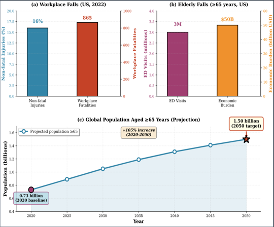
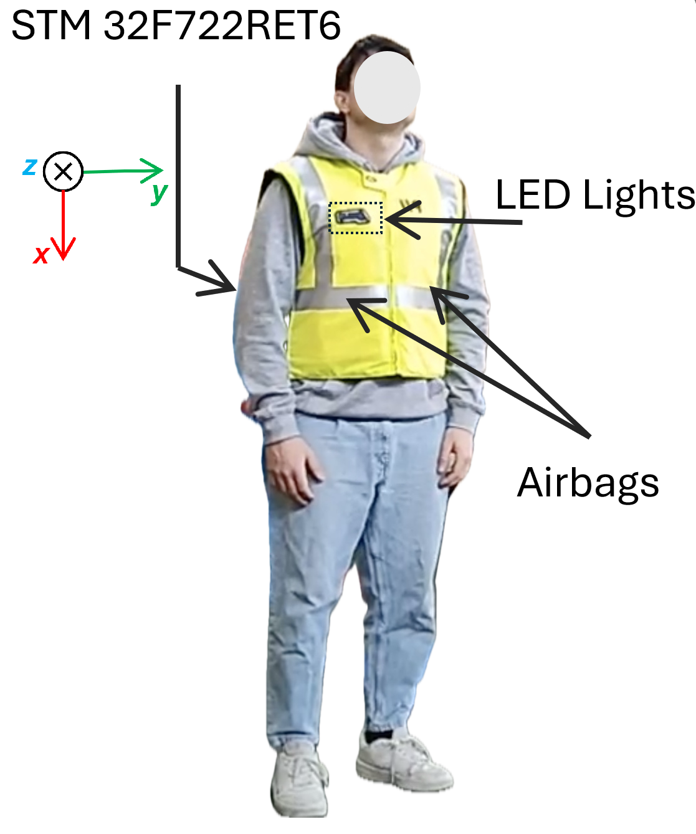
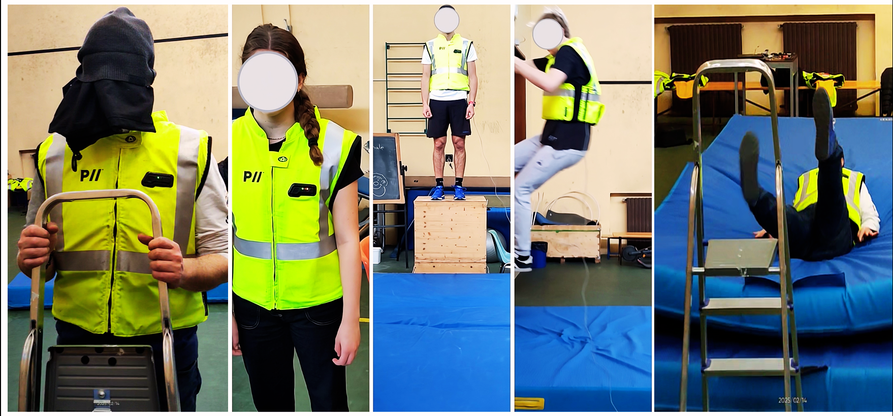
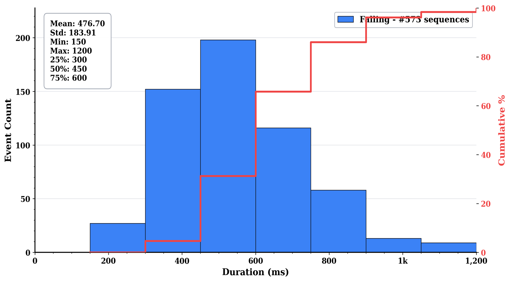
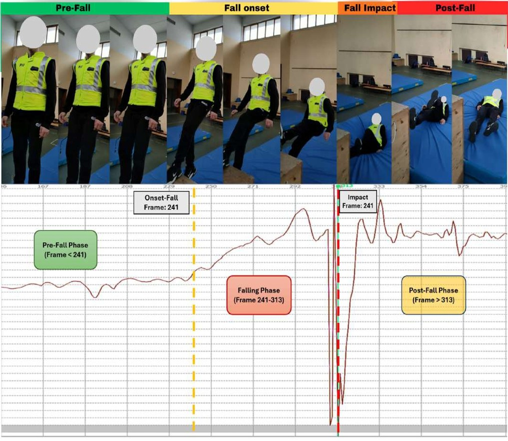
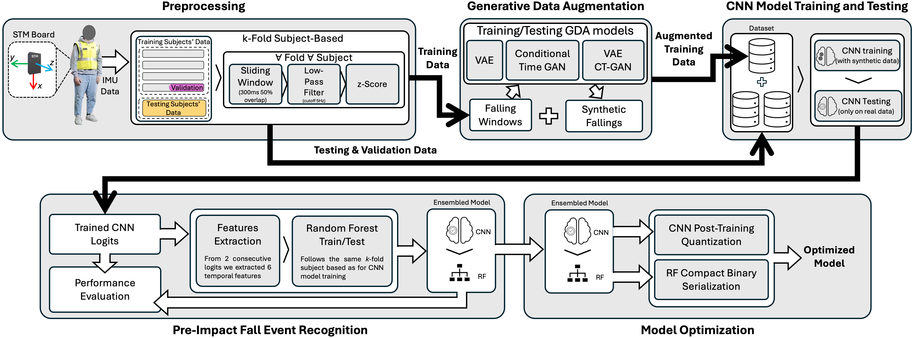

71
Total Subjects
2,947,168
Activity Segments
32,806
Original Falls
+65,612
Avg Synthetic

Design lightweight DL architectures for strict microcontroller constraints
Develop comprehensive datasets and evaluation protocols for practical reliability
Establish methodologies for industry adoption and demonstrate real-world readiness

Reactive approach — alerts after fall occurs. Cannot prevent impact injuries.
Proactive approach — enables protective intervention before ground contact.
Key Insight: Wearable airbags can reduce hip impact forces by 60-80% when deployed during pre-impact phase.
This thesis addresses these critical gaps through systematic dataset development, lightweight architecture design, and real-world validation, bridging the gap between academic research and deployable embedded safety systems.
"How can comprehensive datasets encompassing diverse fall scenarios be developed to support robust pre-impact detection model training?"
"How can pre-impact fall detection be achieved on resource-constrained embedded microcontrollers?"
"How can severe class imbalance between fall and non-fall data be effectively addressed?"
"How can hierarchical classification strategies enhance fall detection performance?"
| Dataset | Subjects | Fall Types | Elevation Falls | Real Workplace | Pre-Impact Annotation |
|---|---|---|---|---|---|
| SisFall | 38 | 15 | ✗ | ✗ | ✗ |
| MobiAct | 66 | 4 | ✗ | ✗ | ✗ |
| KFall | 32 | 15 | ✗ | ✗ | ✓ |
| Our Dataset | 29 (lab) + 10 (site) | 21 | ✓ (6 types) | ✓ (10 workers) | ✓ (LED sync) |
6 construction-specific elevation falls including ladder falls, scaffold falls, and backward falls from height — scenarios absent from prior benchmarks.
Extreme class imbalance (2.22% falls) combined with hardware constraints makes this dataset ideal for neural architecture search research.
Designed following KFall structure for direct integration, creating a combined resource of 61+ participants with standardized preprocessing.
| Microcontroller | STM32F722RET6 |
| Processor | ARM Cortex-M7 @ 216MHz |
| Flash Memory | 512 KB |
| SRAM | 256 KB |
| Accelerometer | LIS3DH tri-axis MEMS (±16g, 1mg resolution) |
| Gyroscope | LSM6DS3 tri-axis (±2000dps, 0.07dps) |
| Sampling Rate | 100 Hz (both sensors) |

Positioned at lower back (vertebrae L1-L2) capturing whole-body dynamics with anatomically-aligned coordinate system.


| Controlled Environment | 3.41h (7.41%) |
| Activities (23 tasks) | 2.35h (5.10%) |
| Falls (21 types) | 1.06h (2.30%) |
| Construction Site | 42.64h (92.59%) |
| Total Dataset | 46.05h |
Actual falling time represents only 0.16% of the whole dataset, and 2.22% in controlled lab settings — reflecting real-world conditions where falls are rare events.
| Mean Duration | 476.7ms |
| Range | 150-1200ms |
| Std Dev | 183.9ms |
Key Insight: Elevation falls (Tasks 39-42) show longer pre-impact phases (700-1000ms) vs ground-level falls (300-600ms), providing critical reaction time for safety systems.
Normal daily activities before fall onset (Frame < 241)
Unrecoverable free-fall from onset to impact (Frame 241-313)
Ground contact moment (Frame 313)
Recovery movements after impact (Frame > 313)
Three high-brightness LEDs execute programmed sequence for precise temporal alignment:
Bit transitions 0→4→1 encoded in sensor data enable frame-level synchronization between 100fps video and 100Hz IMU data.

Laboratory Experimental Setup & Data Collection Process

Normal Activities
Stable acceleration
Loss of Balance
⚡ Detection Window
Ground Contact
Traditional detection
After Impact
Emergency response
Target Window: Critical stage (300-400ms). Goal: Activate protection before impact rather than react after the fall occurs. This requires strict timing constraints on the detection system.
| Non-falling windows | 242,738 (96.4%) |
| Falling windows | 9,105 (3.6%) |
| Window size | 400 ms |
| Overlap / Stride | 50% / 200 ms |
| Characteristic | Config A | Config B |
|---|---|---|
| Participants | 61 | 71 |
| Laboratory Data (Tasks 01–44) |
✓ | ✓ |
| Construction Site Data (Task 88) |
✗ | ✓ |
| Primary Purpose | Architecture validation | Realistic evaluation |
| Used in Chapter | 4 | 5 |
Config B (Chapter 5): 61 laboratory participants + 10 construction workers, creating a realistic evaluation scenario with authentic workplace activity.
| Layer Type | Configuration | Input → Output | Parameters | Purpose |
|---|---|---|---|---|
| Input Layer | [40 × 6] IMU windows | Raw sensor data | 0 | 400ms 6-channel input |
| Conv1D Layer 1 | 64 filters, kernel=4 | [40×6] → [27×64] | 1,600 | Feature extraction |
| MaxPool1D + Dropout | Pool=2, dropout=0.1 | [27×64] → [13×64] | 0 | Dimensionality reduction |
| Conv1D Layer 2 | 64 filters, kernel=4 | [13×64] → [10×64] | 16,384 | Higher-level features |
| MaxPool1D + Dropout | Pool=2, dropout=0.4 | [10×64] → [5×64] | 0 | Final dimension reduction |
| Dense Layer | 320→128 with PReLU | [320] → [128] | 41,088 | Classification preparation |
| Output Layer | 128→2 with Softmax | [128] → [2] | 258 | Binary fall/activity |

Config A + filtering + alignment + z-score normalization
400 ms windows with 50% overlap for real-time monitoring
5-fold subject-independent CV with augmentation & class weighting
INT8 quantization and STM32F722RET6 hardware validation
| INT8 quantization | Model size reduced from 268.12 KB to 67.03 KB |
| RAM usage | 16.87 KB after quantization |
| Event-level false negatives | 4.17% |
| Event-level false positives | 2.04% |
| Metric | Floating-Point (FP32) | INT8 Quantized | Impact |
|---|---|---|---|
| Model Size | 268.12 KB | 67.03 KB | ↓ 75% |
| RAM Usage | ~50 KB | 16.87 KB | ↓ 66% |
| Inference Time | ~6 ms | 4 ms | ↓ 33% |
| F1-Score | 86.69% | 86.52% | −0.17% |
| Accuracy | 98.28% | 98.21% | −0.07% |
This chapter proves feasibility, but reliability is still not sufficient for safety-critical deployment. Projected false alarm occurrences during construction work at 2.04% event-level false positive rate would be unacceptable. Need to reduce missed falls and false alarms without losing embedded feasibility.
| Total duration | 57.14 h (3428.4 min) |
| True falling phase | 24.52 min only |
| Activity : falling ratio | 131:1 |
| Window size | 300 ms |
Configuration B reflects the reality: only 24.52 minutes of true falling phase in the full dataset. This extreme imbalance (131:1) demands advanced augmentation strategies.

5 Hz low-pass filter, z-score norm, 300 ms windows, 50% overlap
VAE, CT-GAN, and Hybrid VAE-GAN synthesize minority-class samples
Reuse Chapter 4 lightweight CNN, now trained on augmented data
Random Forest receives confidence patterns from two consecutive windows
Same embedded CNN backbone, stronger training data, and smarter event-level decision making.


Probabilistic latent space learning. Quality: Noise filtering, smooth generation. Multiplier: 2×
Adversarial training for high variation. Diversity: Edge cases. Multiplier: ~1×
Combined best of both: quality + diversity. Multiplier: 2× VAE + 1× GAN
The Chapter 4 CNN still produces window-level falling probabilities. Two consecutive 300 ms windows (M=2) are buffered for each event decision. The Random Forest learns whether confidence is sustained or only a transient spike — directly targeting the false positive problem.
| μ | Mean probability |
| max | Maximum probability |
| π | Peak position |
| q₀.₅ | Fraction above 0.5 |
| q₀.₇ | Fraction above 0.7 |
| c | Upward crossings |
Latency preserved: Two 300 ms windows with 50% overlap give a final decision at 450 ms, leaving about 150–250 ms of safety margin for typical falls.


Chapter 5 improves reliability without breaking the hardware budget. The event-level Random Forest aggregation eliminates the transient false alarms that plagued the Chapter 4 threshold approach, achieving safety-critical performance.
81.87-83.39% F1
73-78% Recall
90.14-91.66% F1
83-86% Recall
99.43-99.57% F1
98.94-99.32% Recall
| Time Period | CNN Only | CNN-RF | Reduction |
|---|---|---|---|
| 8-hour shift | ~29 | ~1 | 96.6% ↓ |
| 24 hours | ~88 | ~3 | 96.6% ↓ |
| 5-day week | ~441 | ~13 | 97.1% ↓ |
| 22-day month | ~1,939 | ~57 | 97.0% ↓ |
Monthly effect: about 33× fewer disruptions to worker workflow (from ~1,939 to ~57).
| CNN Flash | 58.51 KB (35% of 256KB) |
| CNN RAM | 15 KB (5.9% of 256KB) |
| RF Flash | 31.20 KB (12.2% of 256KB) |
| RF RAM | 2 KB (0.8% of 256KB) |
| CNN Inference | 4.0 ms |
| Random Forest | 0.5 ms |
| Total Inference | 4.5 ms |
| Decision Latency | 450 ms (two 300ms windows, 50% overlap) |
Typical fall duration: 500-700 ms | Decision latency: 450 ms | Device activation: 150 ms | Available safety margin: 150-250 ms
The system must detect the fall and trigger airbag deployment within the pre-impact window, providing full protection before ground contact.
"A Lightweight CNN for Real-Time Pre-Impact Fall Detection" — Turetta, Ali, Demrozi, Pravadelli
IEEE Access (2024): "ICT-Based Solutions for Alzheimer's Disease Care: A Systematic Review" — Ali et al.
IEEE Sensors Journal (Under Review): "Exploring Generative Data Augmentation for Real-Time Pre-Impact Fall Detection" — Ali et al.
CoMoRe-AI 2026 @ IEEE PerCom: "IMU-based pre-impact, impact, and post-impact fall detection dataset" — Ali et al.
Leading manufacturer of smart safety jackets for construction environments. Detection pipeline integrated into commercial platform. Wearable airbag platform operating across Europe.
Successful translation from academic research to practical safety systems protecting workers in high-risk occupational contexts.
PhD Supervisor, University of Verona, Italy
Co-Supervisor, University of Stavanger, Norway
Research Collaborator, Norwegian Univ. Life Sciences
Technical Collaborator, University of Verona
Prof. Nicola Bombieri
University of Verona
Prof. Stefano Tamburin
University of Verona
"Grateful for your dedicated oversight, insightful evaluations, and valuable recommendations"
Demonstrated that deep learning operates effectively on resource-constrained devices when efficiency guides design from conception.
Achieved 99.5% event-level F1-score with <1% false negatives meeting stringent safety requirements.
Established methodologies for industry adoption with commercial deployment validating real-world readiness.
"Sophisticated machine learning operates effectively within severe wearable device constraints when efficiency considerations guide design from initial conception."
Validation with elderly populations with additional dataset and diverse deployment contexts (healthcare, industrial, sports).
Address elevation falls (4-8% miss rate) through targeted data collection or few-shot learning.
TCN, attention mechanisms, neural architecture search with hardware-aware optimization.
Power optimization for 24-hour monitoring, user interface design, domain-specific protocol integration.
High-Risk Industries: Mining, manufacturing, aviation | Enterprise Scale: Large safety systems deployment.
Questions & Discussion
Muhammad Toqeer Ali | PhD Candidate
Università di Verona | Department of Computer Science